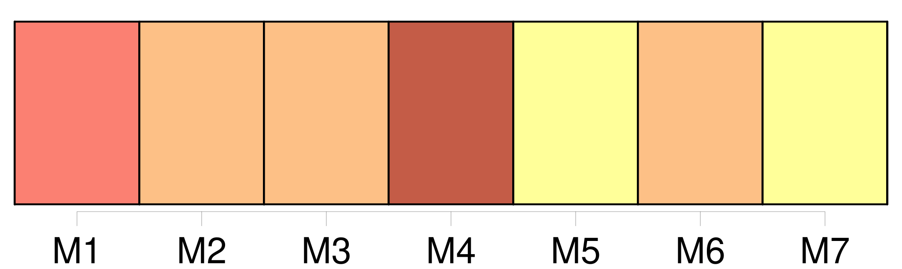
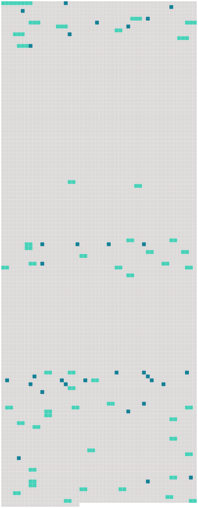

Longueur nb maillons : 81 mentions |
  |
[Tout individu âgé de plus de cinquante ans] , et sans enfans ni descendans légitimes, [qui] voudra, durant la minorité d'un individu, se l'attacher par un titre légal, pourra devenir son tuteur officieux en obtenant le consentement des père et mère de l'enfant, ou du survivant d'entre eux, ou, à leur défaut, d'un conseil de famille, ou enfin, si l'enfant n'a point de parens connus, en obtenant le consentement des administrateurs de l'hospice où [il] aura été recueilli, ou de la municipalité du lieu de [sa] résidence. [8 phrases]
Si le pupille a quelque bien et s'il était antérieurement en tutelle l'administration de ses biens, comme celle de sa personne, passera [au tuteur officieux] , [qui] ne pourra néanmoins imputer les dépenses de l'éducation sur les revenus du pupille. [1 phrases]
Si [le tuteur officieux] , après cinq ans révolus depuis la tutelle, et dans la prévoyance de [son] décès avant la majorité du pupille, lui confère l'adoption par acte testamentaire, cette disposition sera valable, pourvu que [le tuteur officieux] ne laisse point d'enfans légitimes. [1 phrases]
Dans le cas où [le tuteur officieux] mourrait soit avant les cinq ans, soit après ce temps, sans avoir adopté [son] pupille, il sera fourni à celui -ci, durant sa minorité, des moyens de subsister, dont la quotité et l'espèce, s'il n'y a été antérieurement pourvu par une convention formelle, seront réglées soit amiablement entre les représentans respectifs [du tuteur] et du pupille, soit judiciairement en cas de contestation. [1 phrases]
Si, à la majorité du pupille, [son tuteur officieux] veut l'adopter, et que le premier y consente, [il] sera procédé à l'adoption selon les formes prescrites au chapitre précédent, et les effets en seront, en tous points, les mêmes. [1 phrases]
Si, dans les trois mois qui suivront la majorité du pupille, les réquisitions par lui faites à son tuteur officieux, à fin d'adoption, sont restées sans effet, et que le pupille ne se trouve point en état de gagner sa vie, [le tuteur officieux] pourra être condamné à indemniser le pupille de l'incapacité où celui -ci pourrait se trouver de pourvoir à sa subsistance. [2 phrases]
[Le tuteur officieux] [qui] aurait eu l'administration de quelques biens pupillaires en devra rendre compte dans tous les cas. [100 phrases]
Lorsqu'un enfant mineur et non émancipé restera sans père ni mère, ni tuteur élu par ses père ou mère, ni ascendans mâles, comme aussi lorsque le tuteur de l'une des qualités ci-dessus exprimées se trouvera ou dans le cas des exclusions dont il sera parlé ci-après, ou valablement excusé, il sera pourvu, par un conseil de famille à la nomination d' [un tuteur] [2 phrases]
Toute personne pourra dénoncer à ce juge de paix le fait qui donnera lieu à la nomination d' [un tuteur] [28 phrases]
En ce cas, [le tuteur] et le protuteur seront indépendans, et non responsables [l'un] envers l'autre pour leur gestion respective. [1 phrases]
[Le tuteur] agira et [administrera] , en cette qualité, du jour de [sa] nomination, si elle a lieu en [sa] présence ; sinon, du jour qu'elle [lui] aura été notifiée. [1 phrases] La tutelle est une charge personnelle qui ne passe point aux héritiers [du tuteur] [5 phrases]
Ses fonctions consisteront à agir pour les intérêts du mineur, lorsqu'ils seront en opposition avec ceux [du tuteur] [1 phrases]
Lorsque les fonctions [du tuteur] seront dévolues à une personne de l'une des qualités exprimées aux sections I, II et III du présent chapitre, [ce tuteur] devra, avant d'entrer en fonctions, faire convoquer, pour la nomination du subrogé tuteur un conseil de famille composé comme il est dit en la section IV.
S'il s'est ingéré dans la gestion avant d'avoir rempli cette formalité, le conseil de famille, convoqué soit sur la réquisition des parens, créanciers ou autres parties intéressées, soit d'office par le juge de paix, pourra, s'il y a eu dol de la part [du tuteur] , [lui] retirer la tutelle, sans préjudice des indemnités dues au mineur. [1 phrases]
Dans les autres tutelles, la nomination du subrogé tuteur aura lieu immédiatement après celle [du tuteur] [1 phrases]
En aucun cas [le tuteur] ne votera pour la nomination du subrogé tuteur, lequel sera pris, hors le cas de frères germains, dans celle des deux lignes à laquelle [le tuteur] n'appartiendra point. [1 phrases]
Le subrogé tuteur ne remplacera pas de plein droit [le tuteur] , lorsque la tutelle deviendra vacante, ou qu'elle sera abandonnée par absence ; mais il devra, en ce cas, sous peine des dommages-intérêts qui pourraient en résulter pour le mineur, provoquer la nomination d'un nouveau tuteur. [4 phrases]
Néanmoins [le tuteur] ne pourra provoquer la destitution du subrogé tuteur, ni voter dans les conseils de famille qui seront convoqués pour cet objet. [69 phrases]
De l'Administration [du Tuteur] [1 phrases]
[Le tuteur] prendra soin de la personne du mineur, et le [représentera] dans tous les actes civils. [Il] administrera ses biens en bon père de famille, et [répondra] des dommages-intérêts qui pourraient résulter d'une mauvaise gestion.
[Il] ne peut ni acheter les biens du mineur, ni les prendre à ferme à moins que le conseil de famille n'ait autorisé le subrogé tuteur à [lui] en passer bail ni accepter la cession d'aucun droit ou créance contre [son] pupille. [1 phrases]
Dans les dix jours qui suivront celui de [sa] nomination, dûment connue de [lui] , [le tuteur] requerra la levée des scellés, s'ils ont été apposés, et [fera] procéder immédiatement à l'inventaire des biens du mineur, en présence du subrogé tuteur.
S'il [lui] est dû quelque chose par le mineur, [il] devra le déclarer dans l'inventaire, à peine de déchéance, et ce sur la réquisition que l'officier public sera tenu de [lui] en faire, et dont mention sera faite au procès-verbal. [1 phrases]
Dans le mois qui suivra la clôture de l'inventaire, [le tuteur] fera vendre, en présence du subrogé tuteur, aux enchères reçues par un officier public et après des affiches ou publications dont le procès-verbal de vente fera mention, tous les meubles autres que ceux que le conseil de famille [l'] aurait autorisé à conserver en nature. [6 phrases]
Le même acte spécifiera si [le tuteur] est autorisé à s'aider, dans [sa] gestion, d'un ou plusieurs administrateurs particuliers, salariés, et gérant sous [sa responsabilité] [1 phrases]
Ce conseil déterminera positivement la somme à laquelle commencera, pour [le tuteur] , l'obligation d'employer l'excédant des revenus sur la dépense : cet emploi devra être fait dans le délai de six mois, passé lequel [le tuteur] devra les intérêts à défaut d'emploi. [1 phrases]
Si [le tuteur] n'a pas fait déterminer par le conseil de famille la somme à laquelle doit commencer l'emploi, [il] devra, après le délai exprimé dans l'article précédent, les intérêts de toute somme non employée, quelque modique qu'elle soit. [1 phrases] [Le tuteur] , même le père ou la mère, ne peut emprunter pour le mineur, ni aliéner ou hypothéquer ses biens immeubles, sans y être autorisé par un conseil de famille. [1 phrases]
Dans le premier cas, le conseil de famille n'accordera son autorisation qu'après qu'il aura été constaté, par un compte sommaire présenté par [le tuteur] , que les deniers, effets mobiliers et revenus [du mineur] sont insuffisans. [2 phrases]
Les délibérations du conseil de famille relatives à cet objet, ne seront exécutées qu'après que [le tuteur] en aura demandé et obtenu l'homologation devant le tribunal civil de première instance, qui y statuera en la chambre du conseil, et après avoir entendu le commissaire du Gouvernement. [7 phrases] [Le tuteur] ne pourra accepter ni répudier une succession échue au mineur, sans une autorisation préalable du conseil de famille. [4 phrases]
La donation faite au mineur ne pourra être acceptée par [le tuteur] qu'avec l'autorisation du conseil de famille. [4 phrases]
La même autorisation sera nécessaire [au tuteur] pour provoquer un partage mais [il] pourra, sans cette autorisation, répondre à une demande en partage dirigée contre le mineur. [5 phrases]
[Le tuteur] ne pourra transiger au nom du mineurs qu'après y avoir été autorisé par le conseil de famille, et de l'avis de trois jurisconsultes désignés par le commissaire du Gouvernement près le tribunal civil. [6 phrases]
[Tout tuteur] est comptable de [sa] gestion lorsqu'elle finit. [1 phrases]
[Tout tuteur] , autre que le père et la mère, peut être tenu, même durant la tutelle, de remettre au subrogé tuteur des états de situation de [sa] gestion, aux époques que le conseil de famille aurait jugé à propos de fixer, sans néanmoins que [le tuteur] puisse être astreint à en fournir plus d'un chaque année. [3 phrases]
[Le tuteur] en avancera les frais.
On y allouera [au tuteur] toutes dépenses suffisamment justifiées, et dont l'objet sera utile. [1 phrases]
Tout traité qui pourra intervenir entre [le tuteur] et le mineur devenu majeur, sera nul, s'il n'a été précédé de la reddition d'un compte détaillé, et de la remise des pièces justificatives ; le tout constaté par un récépissé de l'oyantcompte, dix jours au moins avant le traité. [3 phrases]
La somme à laquelle s'élèvera le reliquat dû par [le tuteur] , portera intérêt, sans demande, à compter de la clôture du compte.
Les intérêts de ce qui sera dû [au tuteur] par le mineur, ne courront que du jour de la sommation de payer qui aura suivi la clôture du compte. [1 phrases] Toute action du mineur contre [son tuteur] , relativement aux faits de la tutelle, se prescrit par dix ans, à compter de la majorité. |
 |
La ressource peut être téléchargée sur la page Ortolang
Si vous avez des questions ou vous voyez des erreurs, merci d'envoyer un mail à silvia.federzoni89@gmail.com
Site développé par S. Federzoni (contact)